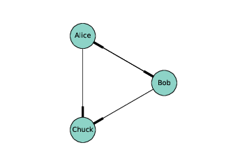
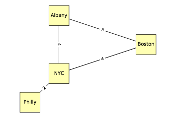
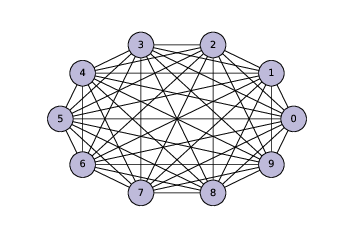
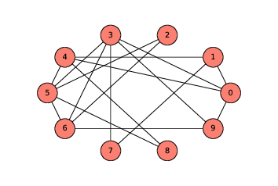
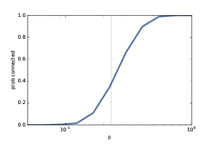
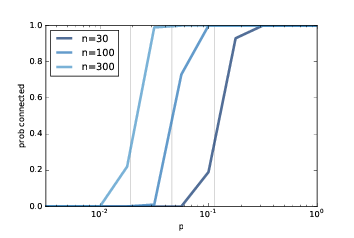

二、图
译者：飞龙
自豪地采用谷歌翻译
本书的前三章有关一些模型，它们描述了由组件和组件之间的连接组成的系统。例如，在生态食物网中，组件是物种，连接代表捕食者和猎物的关系。
在本章中，我介绍了 NetworkX，一个用于构建和研究这些模型的 Python 包。我们从 Erdős-Rényi 模型开始，它具有一些有趣的数学属性。在下一章中，我们将介绍更有用的，解释现实系统的模型。
本章的代码在本书仓库中的chap02.ipynb中。使用代码的更多信息请参见第（？）章。
2.1 图是什么？

图 2.1：表示社交网络的有向图
对于大多数人来说，图是数据集的视觉表示，如条形图或股票价格对于时间的绘图。这不是本章的内容。
在本章中，图是一个系统的表示，它包含离散的互连元素。元素由节点表示，互连由边表示。
例如，你可以表示一个路线图，每个城市都是一个节点，每个城市之间的路线是一条边。或者你可以表示一个社交网络，每个人是节点，如果他们是朋友，两个人之间有边，否则没有。
在某些图中，边具有长度，成本或权重等属性。例如，在路线图中，边的长度可能代表两个城市之间的距离，或旅行时间。在社交网络中，可能会有不同的边来表示不同种类的关系：朋友，商业伙伴等。
边可以是有向或无向的，这取决于它们表示的关系是不对称的还是对称的。在路线图中，你可能会使用有向边表示单向街道，使用无向边表示双向街道。在某些社交网络，如 Facebook，好友是对称的：如果 A 是 B 的朋友，那么 B 也是 A 的朋友。但在 Twitter 上，“关注”关系并不对称；如果 A 关注了 B，这并不意味着 B 关注 A。因此，你可以使用无向边来表示 Facebook 网络，并将有向边用于 Twitter。
图具有有趣的数学属性，并且有一个称为图论的数学分支，用于研究它们。
图也很有用，因为有许多现实世界的问题可以使用图的算法来解决。例如，Dijkstra 的最短路径算法，是从图中找到某个节点到所有其他节点的最短路径的有效方式。路径是两个节点之间的，带有边的节点序列。
图的节点通常以圆形或方形绘制，边通常以直线绘制。例如，上面的有向图中，节点可能代表在 Twitter 上彼此“关注”的三个人。线的较厚部分表示边的方向。在这个例子中，爱丽丝和鲍勃相互关注，都关注查克，但查克没有关注任何人。
下面的无向图展示了美国东北部的四个城市；边上的标签表示驾驶时间，以小时为单位。在这个例子中，节点的位置大致对应于城市的地理位置，但是通常图的布局是任意的。
2.2 NetworkX

图 2.2：表示城市和高速公路的无向图
为了表示图，我们将使用一个名为 NetworkX 的包，它是 Python 中最常用的网络库。你可以在 https://networkx.github.io/ 上阅读更多信息，但是我们之后会解释。
我们可以通过导入 NetworkX 和实例化nx.DiGraph来创建有向图：
import networkx as nx
G = nx.DiGraph()
通常将 NetworkX 导入为nx。此时，G是一个DiGraph对象，不包含节点和边。我们可以使用add_node方法添加节点：
G.add_node('Alice')
G.add_node('Bob')
G.add_node('Chuck')
现在我们可以使用nodes方法获取节点列表：
>>> G.nodes()
['Alice', 'Bob', 'Chuck']
添加边的方式几乎相同：
G.add_edge('Alice', 'Bob')
G.add_edge('Alice', 'Chuck')
G.add_edge('Bob', 'Alice')
G.add_edge('Bob', 'Chuck')
我们可以使用edges来获取边的列表：
>>> G.edges()
[('Alice', 'Bob'), ('Alice', 'Chuck'),
('Bob', 'Alice'), ('Bob', 'Chuck')]
NetworkX 提供了几个绘图的功能；draw_circular将节点排列成一个圆，并使用边将它们连接：
nx.draw_circular(G,
node_color=COLORS[0],
node_size=2000,
with_labels=True)
这就是我用来生成图（？）的代码。with_labels选项标注了节点；在下一个例子中，我们将看到如何标注边。
为了产生图（？），我们以一个字典开始，它将每个城市的名称，映射为对应的经纬度：
pos = dict(Albany=(-74, 43),
Boston=(-71, 42),
NYC=(-74, 41),
Philly=(-75, 40))
因为这是个无向图，我实例化了nx.Graph：
G = nx.Graph()
之后我可以使用add_nodes_from来迭代pos的键，并将它们添加为节点。
G.add_nodes_from(pos)
下面我会创建一个字典，将每条边映射为对应的驾驶时间。
drive_times = {('Albany', 'Boston'): 3,
('Albany', 'NYC'): 4,
('Boston', 'NYC'): 4,
('NYC', 'Philly'): 2}
现在我可以使用add_edges_from，它迭代了drive_times的键，并将它们添加为边：
G.add_edges_from(drive_times)
现在我不使用draw_circular，它将节点排列成一个圆圈，而是使用draw，它接受pos作为第二个参数：
nx.draw(G, pos,
node_color=COLORS[1],
node_shape='s',
node_size=2500,
with_labels=True)
pos是一个字典，将每个城市映射为其坐标；draw使用它来确定节点的位置。
要添加边的标签，我们使用draw_networkx_edge_labels：
nx.draw_networkx_edge_labels(G, pos,
edge_labels=drive_times)
drive_times是一个字典，将每条边映射为它们之间的驾驶距离，每条边表示为城市名称的偶对。这就是我生成图（？）的方式。
在这两个例子中，这些节点是字符串，但是通常它们可以是任何可哈希的类型。
2.3 随机图
随机图就像它的名字一样：一个随机生成的节点和边的图。当然，有许多随机过程可以生成图，所以有许多种类的随机图。
其中一个更有趣的是 Erdős-Rényi 模型，PaulErdős 和 AlfrédRényi 在 20 世纪 60 年代研究过它。
Erdős-Rényi 图（ER 图）的特征在于两个参数：n是节点的数量，p是任何两个节点之间存在边的概率。见 http://en.wikipedia.org/wiki/Erdos-Renyi_model。
Erdős 和 Rényi 研究了这些随机图的属性；其令人惊奇的结果之一就是，随着随机的边被添加，随机图的属性会突然变化。
展示这类转变的一个属性是连通性。如果每个节点到每个其他节点都存在路径，那么无向图是连通的。
在 ER 图中，当p较小时，图是连通图的概率非常低，而p较大时接近1。在这两种状态之间，在p的特定值处存在快速转变，表示为p*。
Erdős 和 Rényi 表明，这个临界值是p* = lnn / n，其中n是节点数。如果p < p*，随机图G(n, p)不太可能连通，并且如果p > p*，则很可能连通。
为了测试这个说法，我们将开发算法来生成随机图，并检查它们是否连通。
2.4 生成图

我将首先生成一个完全图，这是一个图，其中每个节点都彼此连接。
这是一个生成器函数，它接收节点列表并枚举所有不同的偶对。如果你不熟悉生成器函数，你可能需要阅读附录？，然后回来。
def all_pairs(nodes):
for i, u in enumerate(nodes):
for j, v in enumerate(nodes):
if i>j:
yield u, v
你可以使用all_pairs来构造一个完全图。
def make_complete_graph(n):
G = nx.Graph()
nodes = range(n)
G.add_nodes_from(nodes)
G.add_edges_from(all_pairs(nodes))
return G
make_complete_graph接受节点数n，并返回一个新的Graph，拥有n个节点，所有节点之间都有边。
以下代码生成了一个包含 10 个节点的完全图，并绘制出来。
complete = make_complete_graph(10)
nx.draw_circular(complete,
node_color=COLORS[2],
node_size=1000,
with_labels=True)
图（？）显示了结果。不久之后，我们将修改此代码来生成 ER 图，但首先我们将开发函数来检查图是否是连通的。
2.5 连通图
如果每个节点到每个其他节点都存在路径，这个图就是连通图。请见http://en.wikipedia.org/wiki/Connectivity_(graph_theory)。
对于许多涉及图的应用，检查图是否连通是很有用的。幸运的是，有一个简单的算法。
你可以从任何节点起步，并检查是否可以到达所有其他节点。如果你可以到达一个节点v，你可以到达v的任何一个邻居，他们是v通过边连接的任何节点。
Graph类提供了一个称为neighbors的方法，返回给定节点的邻居列表。例如，在上一节中我们生成的完全图中：
>>> complete.neighbors(0)
[1, 2, 3, 4, 5, 6, 7, 8, 9]
假设我们从节点s起步。我们可以将s标记为“已访问”，然后我们可以标记它的邻居。然后我们标记邻居的邻居，依此类推，直到你无法再到达任何节点。如果访问了所有节点，则图是连通图。
以下是 Python 中的样子：
def reachable_nodes(G, start):
seen = set()
stack = [start]
while stack:
node = stack.pop()
if node not in seen:
seen.add(node)
stack.extend(G.neighbors(node))
return seen
reachable_nodes接受Graph和起始节点start，并返回可以从start到达的节点集合，他们。
最初，已访问的集合是空的，我们创建一个名为stack的列表，跟踪我们发现但尚未处理的节点。最开始，栈包含单个节点start。
现在，每次在循环中，我们：
- 从栈中删除一个节点。
- 如果节点已在
seen中，我们返回到步骤 1。 - 否则，我们将节点添加到
seen，并将其邻居添加到栈。
当栈为空时，我们无法再到达任何节点，所以我们终止了循环并返回。
例如，我们可以找到从节点0可到达的，完全图中的所有节点：
>>> reachable_nodes(complete, 0)
{0, 1, 2, 3, 4, 5, 6, 7, 8, 9}
最初，栈包含节点0，seen是空的。第一次循环中，节点0添加到了seen，所有其他节点添加到了栈中（因为它们都是节点0的邻居）。
下一次循环中，pop返回栈中的最后一个元素，即节点9.因此，节点9被添加到seen，并且其邻居被添加到栈。
请注意，同一个节点在栈中可能会出现多次；实际上，具有k个邻居的节点将添加到栈k次。稍后我们将寻找方法，来使此算法更有效率。
我们可以使用reachable_nodes来编写is_connected：
def is_connected(G):
start = next(G.nodes_iter())
reachable = reachable_nodes(G, start)
return len(reachable) == len(G)
is_connected通过调用nodes_iter来选择一个起始节点，node_iter返回一个迭代器对象，并将结果传递给next，返回第一个节点。
reachable获取了一组节点，它们可以从start到达。如果这个集合的大小与图的大小相同，那意味着我们可以访问所有节点，也就是这个图是连通的。
一个完全图是连通的，毫不奇怪：
>>> is_connected(complete)
True
下一节中，我们会生成 ER 图，并检查它们是否是连通的。
2.6 生成 ER图

图 2.4：ER 图，
n=10，p=0.3
ER 图G(n, p)包含n个节点，每对节点以概率为p的边连接。生成 ER 图类似于生成完全图。
以下生成器函数枚举所有可能的边，并使用辅助函数flip，来选择哪些应添加到图中：
def random_pairs(nodes, p):
for i, u in enumerate(nodes):
for j, v in enumerate(nodes):
if i>j and flip(p):
yield u, v
flip以给定概率p返回True，以互补的概率1-p返回False。
from numpy.random import random
def flip(p):
return random() < p
最后，make_random_graph生成并返回 ER 图G(n, p)。
def make_random_graph(n, p):
G = nx.Graph()
nodes = range(n)
G.add_nodes_from(nodes)
G.add_edges_from(random_pairs(nodes, p))
return G
make_random_graph几乎和make_complete_graph，唯一的不同是它使用random_pairs而不是all_pairs。
这里是p=0.3的例子：
random_graph = make_random_graph(10, 0.3)
图（？）展示了结果。这个图是连通图；事实上，大多数p=10并且p=3的 ER 图都是连通图。在下一节中，我们将看看有多少。
2.7 连通性的概率

图 2.5：连通性的概率，
n=10，p是一个范围。竖直的线展示了预测的临界值。

图 2.6：连通性的概率，
n是多个值，p是一个范围。
对于n和p的给定值，我们想知道G(n, p)连通的概率。我们可以通过生成大量随机图，来计算有多少个来估计它。就是这样：
def prob_connected(n, p, iters=100):
count = 0
for i in range(iters):
random_graph = make_random_graph(n, p)
if is_connected(random_graph):
count += 1
return count/iters
iters是我们生成的随机图的数量。随着我们增加iter，估计的概率就会更加准确。
>>> prob_connected(10, 0.3, iters=10000)
0.6454
在具有这些参数的 10000 个 ER 图中，6498 个是连通的，因此我们估计其中65％是连通的。所以 0.3 接近临界值，在这里连通概率从接近 0 变为接近 1。根据 Erdős 和 Rényi，p* = lnn / n = 0.23。
我们可以通过估计一系列p值的连通概率，来更清楚地了解转变：
import numpy as np
n = 10
ps = np.logspace(-2.5, 0, 11)
ys = [prob_connected(n, p) for p in ps]
这是我们看到的使用 NumPy 的第一个例子。按照惯例，我将 NumPy 导入为np。函数logspace返回从10 ** -2.5到10 ** 0 = 1的 11 个元素的数组，在对数刻度上等间隔。
为了计算y，我使用列表推导来迭代ps的元素，并计算出每个值为p的随机图的连通概率。
图（？）展示了结果，竖直的线为p*。从 0 到 1 的转变发生在预测的临界值附近。在对数刻度上，这个转变大致对称。
对于较大的n值，图（？）展示了类似的结果。随着n的增加，临界值越来越小，转变越来越突然。
这些实验与 Erdős 和 Rényi 在其论文中证明的结果一致。
2.8 图的算法分析
这一章中，我提出了一个检查图是否连通的算法；在接下来的几章中，我们将再次看到更多的图的算法。并且我们要分析这些算法的性能，了解它们的运行时间如何随着图大小的增加而增长。
如果你还不熟悉算法分析，在你继续之前，你应该阅读附录一。
图算法的增长级别通常表示为顶点数量n，以及边数量m的函数。
作为一个例子，我们分析从前面的reachable_nodes：
def reachable_nodes(G, start):
seen = set()
stack = [start]
while stack:
node = stack.pop()
if node not in seen:
seen.add(node)
stack.extend(G.neighbors(node))
return seen
每次循环，我们从栈中弹出一个节点；默认情况下，pop删除并返回列表的最后一个元素，这是一个常数时间的操作。
接下来我们检查节点是否被已访问，这是一个集合，所以检查成员是常数时间。
如果节点还没有访问，我们添加它是常量时间，然后将邻居添加到栈中，这相对于邻居数量是线性的。
为了使用n和m表达运行时间，我们可以将每个节点添加到seen和stack的总次数加起来。
每个节点只添加一次，所以添加的总数为n。
但是节点可能多次被添加到栈，具体取决于它们有多少邻居。如果节点具有k个邻居，则它会被添加到栈k次。当然，如果它有k个邻居，那意味着它拥有k个边。
所以添加到栈的总数是边的数量m的两倍，由于我们考虑每个边两次。
因此，这个函数的增长级别为O(n + m)，我们可以说，即运行时间与n或m成正比，以较大者为准。
如果我们知道n和m之间的关系，我们可以简化这个表达式。例如，在完全图中，边数是n(n-1)/ 2，它属于O(n^2)。所以对于一个完全图，reachable_nodes是二次于n的。
2.9 练习
本章的代码在chap02.ipynb中，它是本书的仓库中的 Jupyter 笔记本。使用此代码的更多信息，请参阅第（？）节。
练习 1：启动chap02.ipynb并运行代码。笔记本中嵌入了一些简单的练习，你可能想尝试一下。
练习 2：我们分析了reachable_nodes的性能，并将其分类为O(n + m)，其中n是节点数，m是边数。继续分析，is_connected的增长级别是什么？
def is_connected(G):
start = next(G.nodes_iter())
reachable = reachable_nodes(G, start)
return len(reachable) == len(G)
练习 3 ：在我实现reachable_nodes时，你可能很困惑，因为向栈中添加所有邻居而不检查它们是否已访问，明显是低效的。编写一个该函数的版本，在将邻居添加到栈之前检查它们。这个“优化”是否改变了增长级别？它是否使函数更快？
译者注：在弹出节点时将其添加到
seen，在遍历邻居时检查它们是否已访问。
练习 4：
实际上有两种 ER 图。我们在本章中生成的一种，G(n，p)的特征是两个参数，节点数量和节点之间的边的概率。
一种替代定义表示为G(n，m)，也以两个参数为特征：节点数n和边数m。在这个定义中，边数是固定的，但它们的位置是随机的。
使用这个替代定义，重复这一章的实验。这里是几个如何处理它的建议：
编写一个名为
m_pairs的函数，该函数接受节点列表和边数m，并返回随机选择的m个边。一个简单的方法是，生成所有可能的边的列表，并使用random.sample。编写一个名为
make_m_graph的函数，接受n和m，并返回n个节点和m个边的随机图。创建一个
prob_connected的版本，使用make_m_graph而不是make_random_graph。计算一系列
m值的连通概率。
与第一类 ER 图的结果相比，该实验的结果如何？